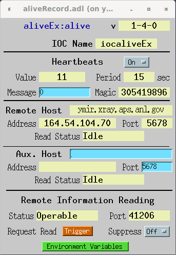

The alive record is intended as a way to allow verification that an IOC is running. It is an active system, using heartbeat messages sent to a central server, which collects heartbeat messages and monitors the IOC statuses. The alive record also allows for the server to query extra information of the IOC, being environment variables (specified in the record) and system specific information (vxWorks boot line, Linux user, etc.)
This system has several important consequences. The server doesn't need to know which IOCs to monitor, as they will self-report themselves upon running a correctly configured alive record. The reading of the boot information also allows for real-time knowledge of the IOC type and boot parameters. The monitoring of IOCs is intended to be outside of EPICS itself, so there is no needing to link EPICS libraries. EPICS network boundary issues with subnets are avoided, as the heartbeat messages are sent as simple UDP packets and the extra information is done with a TCP request from the remote server.
This record could be extended to monitor real-time parameters (such as memory use, etc.), but that is not what this record is intended for. Once a system is known to be up, one should use typical EPICS methods for these things (like devIocStats). However, there is the 32-bit MSG field ("Message Value" on the screen) which can be used to send messages as defined by the user.
The alive record does not process normally, as most of what it does is done in two threads separate from normal record processing. One thread will send UDP heartbeats every HPRD seconds to a remote server, while the other listens for connections from the remote server. When the record actually does process, the current heartbeat that was last sent to the remote server is returned as VAL.
The default heartbeat period is 15 seconds, which allows for declaring failure after a minute, if using four missing hearbeats as the condition. The heartbeating can be turned by setting HRTBT to "Off".
The VAL field holds the current heartbeat value (initially zero), and is incremented each time a UDP heartbeat is sent, every HPRD seconds, assuming HRTBT is set to "On".
The heartbeat UDP packets are sent to a remote server using the RHOST and RPORT fields to specify address and port. The RHOST needs to be the IPv4 numeric address, and not a name.
The IOC's actual name as reported to the remote server is contained in the IOCNM variable. It can be directly set at boot time; if it isn't then the name will be determined by the NMVAR variable, which defaults to "IOC" but can be set to any environment variable. The server may employ a magic number to help filter out unwanted UDP packets sent to it, and this number is specified in the HMAG field, and is the first thing sent in the heartbeat message; the default corresponds to 0x12345678. There is a 32-bit field that can be used to send a user-defined message to the server, MSG, and its usage is left up to the implementer.
Unless suppressed, the remote server can attempt to read back the environment variables and other information using the TCP port specified by IPORT. If initialized to 0, an available port will be found and its value placed this field, otherwise any nonzero value will be attempted. If multiple IOCs are on the same IP address, each alive record needs to use a unique port, which is taken care of automatically if all are initialized to 0. It should be noted that only connections originating from RHOST will be allowed to connect this way. The status of the port can be found with IPSTS, which has three values set by the record: "Undetermined", which is the initial value; "Operable", meaning that the port was successfully opened; and "Inoperable", which means that there was a failure in opening the port. This field is to help debug use of the record.
The send a trigger flag to the remote server, signaling that it should reread the boot information, ITRIG should be set to "Trigger". When the variables have been read, it will return to "Idle". This is also a way to tell that the remote server is working correctly, as going back to "Idle" means that the remote server has done a read, therefore the communication between the record and server works.
If one wants to suppress the server reading the boot information, ISUP should be set to "On"; the record sends a suppress flag to the server, and will immediately close all connection that occur. This is useful if the IOC is behind a firewall that won't allow a direct TCP connection, telling the server to not endlessly try to read.
Names of the environment variables to be sent to the remote server upon request are ENV1-ENV16. If the length of the value of a variable is over 65535, an empty string will be sent back.
The version of the record is kept in VER as a string, in the form of "1-1-0".
| Field | Summary | Type | DCT | Initial | Access | Modify | Rec Proc Monitor | PP |
|---|---|---|---|---|---|---|---|---|
| VAL | Heartbeat Value | ULONG | No | 0 | Yes | No | No | No |
| RHOST | Remote Host IP Address | STRING | Yes | Yes | Yes | Yes | No | |
| RPORT | Remote Host UDP Port Number | USHORT | Yes | 0 | Yes | Yes | Yes | No |
| HRTBT | Heartbeating State | Menu: Off/On | Yes | On | Yes | Yes | Yes | No |
| HPRD | Heartbeat Period | USHORT | Yes | 15 | Yes | No | No | No |
| NMVAR | IOC Name Environment Variable | STRING | Yes | IOC | Yes | No | No | No |
| IOCNM | IOC Name Value | STRING | Yes | Yes | No | No | No | |
| HMAG | Heartbeat Magic Number | ULONG | Yes | 305419896 | Yes | Yes | No | No |
| MSG | Message to Send | LONG | Yes | 0 | Yes | Yes | No | No |
| IPORT | TCP Information Port Number | USHORT | Yes | 0 | Yes | No | No | No |
| IPSTS | Information Port Status | Menu: Undetermined/Operable/Inoperable | Yes | Undetermined | Yes | No | Yes | No |
| ITRIG | Trigger Information Request | Menu: Idle/Trigger | Yes | Idle | Yes | Yes | Yes | No |
| ISUP | Suppress Information Requests | Menu: Off/On | Yes | Off | Yes | Yes | Yes | No | VER | Record Version | STRING | Yes | Yes | No | No | No |
| ENV1 | Environment Variable Name 1 | STRING | Yes | Yes | Yes | Yes | No | |
| ENV2 | Environment Variable Name 2 | STRING | Yes | Yes | Yes | Yes | No | |
| ENV3 | Environment Variable Name 3 | STRING | Yes | Yes | Yes | Yes | No | |
| ENV4 | Environment Variable Name 4 | STRING | Yes | Yes | Yes | Yes | No | |
| ENV5 | Environment Variable Name 5 | STRING | Yes | Yes | Yes | Yes | No | |
| ENV6 | Environment Variable Name 6 | STRING | Yes | Yes | Yes | Yes | No | |
| ENV7 | Environment Variable Name 7 | STRING | Yes | Yes | Yes | Yes | No | |
| ENV8 | Environment Variable Name 8 | STRING | Yes | Yes | Yes | Yes | No | |
| ENV9 | Environment Variable Name 9 | STRING | Yes | Yes | Yes | Yes | No | |
| ENV10 | Environment Variable Name 10 | STRING | Yes | Yes | Yes | Yes | No | |
| ENV11 | Environment Variable Name 11 | STRING | Yes | Yes | Yes | Yes | No | |
| ENV12 | Environment Variable Name 12 | STRING | Yes | Yes | Yes | Yes | No | |
| ENV13 | Environment Variable Name 13 | STRING | Yes | Yes | Yes | Yes | No | |
| ENV14 | Environment Variable Name 14 | STRING | Yes | Yes | Yes | Yes | No | |
| ENV15 | Environment Variable Name 15 | STRING | Yes | Yes | Yes | Yes | No | |
| ENV16 | Environment Variable Name 16 | STRING | Yes | Yes | Yes | Yes | No |
The current time is recorded as the IOC boot time. A UDP socket is opened for sending heartbeat messages. An address structure for the remote server is initialized, using RHOST and RPORT. The name of the IOC is read from the "IOC" environment variable.
A thread is spawned for accepting TCP requests from the remote server on port IPORT, and if the port value is zero, the record will get an automatically assigned port, updating IPORT with the actual value. The TCP port will only accept requests from the IP address specified in RHOST, and as long as ISUP is Off. The message sent back upon request is a list of the specified environment variables, the IOC type, and the data special to that type.
If the HPRD is initially zero, then it is reassigned to the default value, which is currently 15.
Nothing actually happens, other than the forward link get processed. Heartbeats are controlled purely by a timed thread.
Changing the RHOST field causes a check here to make sure that the string value is a properly formed IP address. If not, no sending heartbeats will occur.
This is the UDP message sent for each processing of the record. The minimum size for a message payload is 30 bytes, being being fixed fields of 28 bytes with a null-terminated string. All values are unsigned.
The time values sent are EPICS time values, which are relative to 1990. Converting them to standard Linux time values means adding a value of 631152000 (20 years of seconds) to each.
| Offset (bytes) | 0 | 1 | 2 | 3 | 4 | 5 | 6 | 7 | 8 | 9 | 10 | 11 | 12 | 13 | 14 | 15 | 16 | 17 | 18 | 19 | 20 | 21 | 22 | 23 | 24 | 25 | 26 | 27 | 28 | ... | ... | ... | ... | 28+x | ||||||||||||||||||||||||||||||||||||||||||||||||||||||||||||||||||||||||||||||||||||||||||||||||||||||||||||||||||||||||||||||||||||||||||||||||||||||||||||||||||||||||||||||||||||||||||||||||||||||||||||||||||||||||||||||||||||||||||||||||||||||||||||||||||||||||||||||||||||||||||||||||||||||||||||||||||||||||||||
|---|---|---|---|---|---|---|---|---|---|---|---|---|---|---|---|---|---|---|---|---|---|---|---|---|---|---|---|---|---|---|---|---|---|---|---|---|---|---|---|---|---|---|---|---|---|---|---|---|---|---|---|---|---|---|---|---|---|---|---|---|---|---|---|---|---|---|---|---|---|---|---|---|---|---|---|---|---|---|---|---|---|---|---|---|---|---|---|---|---|---|---|---|---|---|---|---|---|---|---|---|---|---|---|---|---|---|---|---|---|---|---|---|---|---|---|---|---|---|---|---|---|---|---|---|---|---|---|---|---|---|---|---|---|---|---|---|---|---|---|---|---|---|---|---|---|---|---|---|---|---|---|---|---|---|---|---|---|---|---|---|---|---|---|---|---|---|---|---|---|---|---|---|---|---|---|---|---|---|---|---|---|---|---|---|---|---|---|---|---|---|---|---|---|---|---|---|---|---|---|---|---|---|---|---|---|---|---|---|---|---|---|---|---|---|---|---|---|---|---|---|---|---|---|---|---|---|---|---|---|---|---|---|---|---|---|---|---|---|---|---|---|---|---|---|---|---|---|---|---|---|---|---|---|---|---|---|---|---|---|---|---|---|---|---|---|---|---|---|---|---|---|---|---|---|---|---|---|---|---|---|---|---|---|---|---|---|---|---|---|---|---|---|---|---|---|---|---|---|---|---|---|---|---|---|---|---|---|---|---|---|---|---|---|---|---|---|---|---|---|---|---|---|---|---|---|---|---|---|---|---|---|---|---|---|---|---|---|---|---|---|---|---|---|---|---|---|---|---|---|---|
| Field | Magic | Version | Incarnation | Current Time | Heartbeat Value | Period | Flags | Return Port | User Message | IOC name (length x) | 0 | |||||||||||||||||||||||||||||||||||||||||||||||||||||||||||||||||||||||||||||||||||||||||||||||||||||||||||||||||||||||||||||||||||||||||||||||||||||||||||||||||||||||||||||||||||||||||||||||||||||||||||||||||||||||||||||||||||||||||||||||||||||||||||||||||||||||||||||||||||||||||||||||||||||||||||||||||||||||||||||||||||||||||||||||||||
This is the message that is read from the TCP port IPORT on the IOC. When the port is opened, the IOC will write this message and then immediately close the port. There is no way to write a message to the IOC this way.
If the suppression ISUP field is set to "On", the IOC will immediately close any connection whatsoever to this port (ideally the socket would simply be closed, but that would make things more complicated in the implementation).
| Offset (bytes) | 0 | 1 | 2 | 3 | 4 | 5 | 6 | 7 | 8 | 9 | ||||||||||||||||||||||||||||||||||||||||||||||||||||||||||||||||||||||||||||||||||||||||||
|---|---|---|---|---|---|---|---|---|---|---|---|---|---|---|---|---|---|---|---|---|---|---|---|---|---|---|---|---|---|---|---|---|---|---|---|---|---|---|---|---|---|---|---|---|---|---|---|---|---|---|---|---|---|---|---|---|---|---|---|---|---|---|---|---|---|---|---|---|---|---|---|---|---|---|---|---|---|---|---|---|---|---|---|---|---|---|---|---|---|---|---|---|---|---|---|---|---|---|---|---|
| Field | Version | IOC Type | Message Length | Variable Count | ||||||||||||||||||||||||||||||||||||||||||||||||||||||||||||||||||||||||||||||||||||||||||||||||
At this point of the message, byte 10, the locations become variable due to the variable nature of the data. The environment variables are sent as multiple records, the number being Variable Count.
| Record Offset (bytes) | 0 | 1 | ... | ... | x | 1+x | 2+x | 3+x | ... | ... | ... | ... | 2+x+y | |||||||||||||||||||||||||||||||||||||||||||||||||||||||||||||||||||||||||||||||||||||||||||||||||||||||||||||||||||||
|---|---|---|---|---|---|---|---|---|---|---|---|---|---|---|---|---|---|---|---|---|---|---|---|---|---|---|---|---|---|---|---|---|---|---|---|---|---|---|---|---|---|---|---|---|---|---|---|---|---|---|---|---|---|---|---|---|---|---|---|---|---|---|---|---|---|---|---|---|---|---|---|---|---|---|---|---|---|---|---|---|---|---|---|---|---|---|---|---|---|---|---|---|---|---|---|---|---|---|---|---|---|---|---|---|---|---|---|---|---|---|---|---|---|---|---|---|---|---|---|---|---|---|---|---|---|---|---|---|---|---|
| Field | Name Length (length x) | Variable Name | Value Length (length y) | Variable Value | ||||||||||||||||||||||||||||||||||||||||||||||||||||||||||||||||||||||||||||||||||||||||||||||||||||||||||||||||||||||||||||||
If the value of IOC Type is non-zero, there may be extra data at this point. Currently both supported types do include data, so the extra information presented below is present for vxWorks, Linux, and Darwin.
For vxWorks, the extra information is the boot parameters. The data is either in a string or a number. A string is represented by an 8-bit string length, followed by the string itself. The number is a 32-bit number.
| Field Order | Boot Device (str) | Unit Number (int) | Processor Number (int) | Boot Host Name (str) | Boot File (str) | Address (str) | Backplane Address (str) | Boot Host Address (str) | Gateway Address (str) | User Name (str) | User Password (str) | Flags (int) | Target Name (str) | Startup Script (str) | Other (str) |
|---|
For Linux and Darwin, the extra information is the user and group IDs of the IOC process, as well as the hostname of the host computer. The data are represented by an 8-bit string length, followed by the string itself.
| Field Order | User ID (str) | Group ID (str) | Hostname (str) |
|---|
For Windows, the extra information is the login name of the IOC process, as well as the machine name of the host computer. The data are represented by an 8-bit string length, followed by the string itself.
| Field Order | Login name (str) | Machine name (str) |
|---|